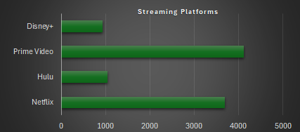
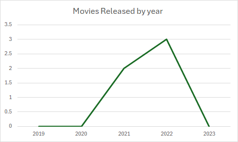
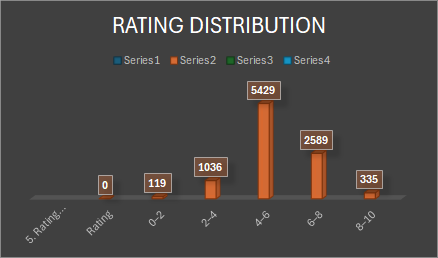
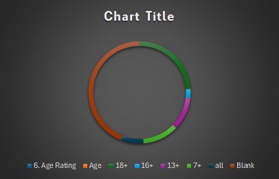
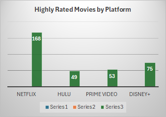
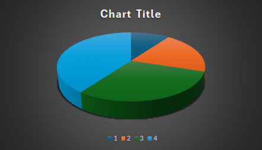
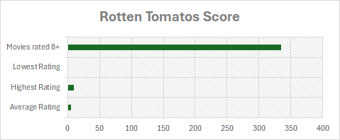
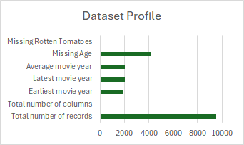

Platform Availability
Total catalog listings per service (non-mutually exclusive)

Movies Released by Year
Chronological release volume across 107 years (1914–2021)

Rotten Tomatoes Rating Distribution
Frequency histogram & empirical density across 9,508 scored titles

Age Rating Breakdown
Catalog distribution across content maturity certifications

Highly Rated Movies by Platform
Titles with critic rating RT ≥ 8.0/10 (80/100)

Movies by Number of Platforms
Multi-platform availability & co-licensing breakdown

Score Boxplot by Age Rating
Five-number summary across certifications (0–100 scale)
Rating Bins Distribution
Discrete intervals on normalized 0–10 scale

Violin Distribution by Age
Probability density contours by content certificate
Correlation Heatmap
6×6 Pearson correlation matrix across release year, critic ratings, and streaming providers

97.34% Single-Platform
9,262 titles exist on only one provider. Multi-service co-licensing is exceedingly rare in this catalog.
Volume vs. Concentration
Prime Video leads total volume (4,113); Netflix leads high-rated count (168); Disney+ has highest quality density (8.13%).
2019 Historic Peak
Catalog volume surges after 2010, reaching an all-time peak of 1,014 releases in 2019 before stabilizing.
Unimodal Normal Curve
Rotten Tomatoes scores form a bell-shaped curve centered at Mean 5.35 / Median 5.20, with 57.1% clustering in the 4–6 interval.